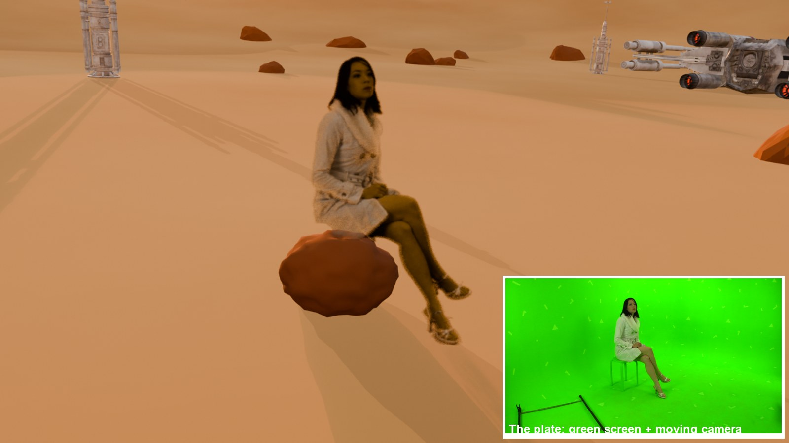
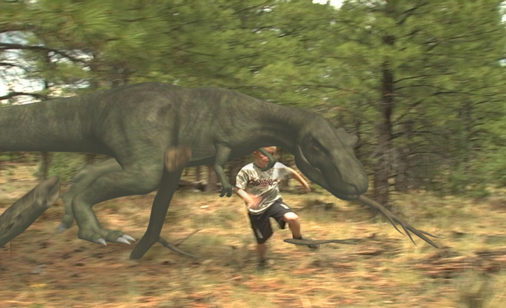
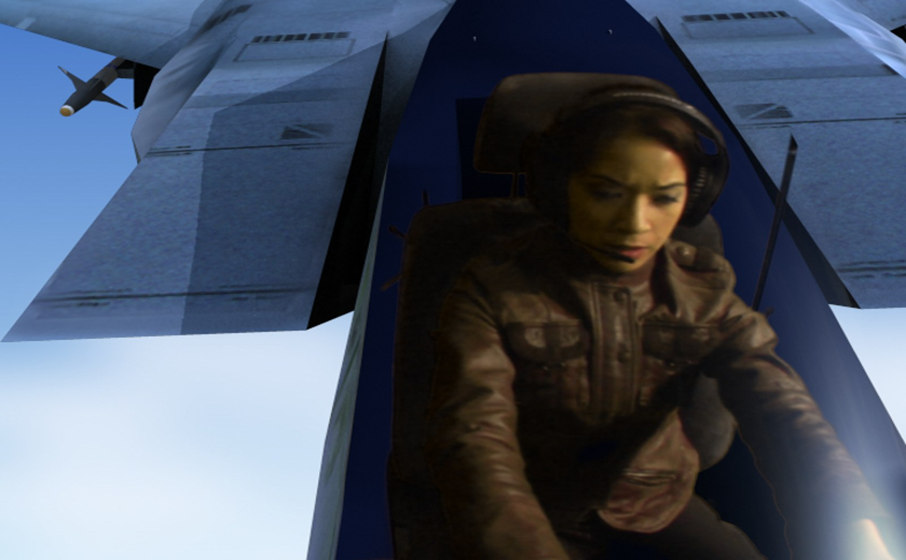
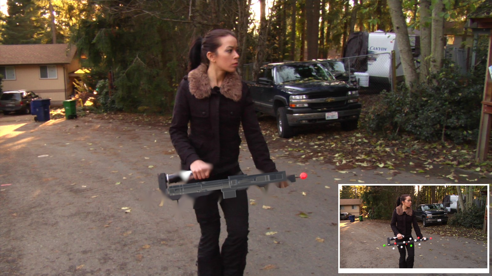

VFX Shot Library
Start with Into the World. Then pick a shot. Each tutorial uses a professional practice plate and ends with a director’s change you solve on your own.

Into the World
Design a world, track a camera, key a green screen, and put a filmed person, then yourself, into it.

Dinosaur Chase
Composite a CG creature into live footage: Alpha Over, contact shadow, black level, colour match.

Cockpit
Key a pilot and seat her in a CG jet with hold-out mattes, layer order and canopy reflections.
Through the Window
Set extension: put your own world outside a real window and make it follow the camera.

Laser Sword
Object tracking: follow a real prop in 3D and replace it with a glowing blade.

Blaster
Object tracking with a moving camera: mount a textured 3D model and inpaint the markers.

Helmet
Head (geometry) tracking: a helmet that follows every turn of an actor’s head.